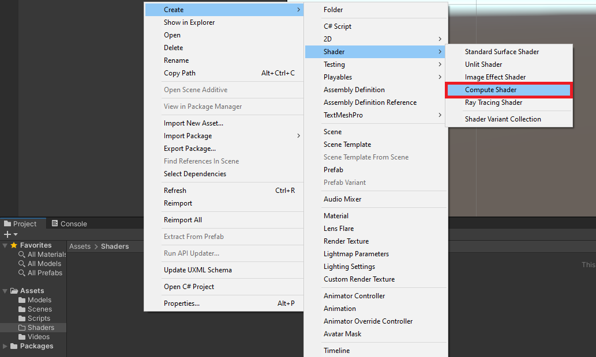
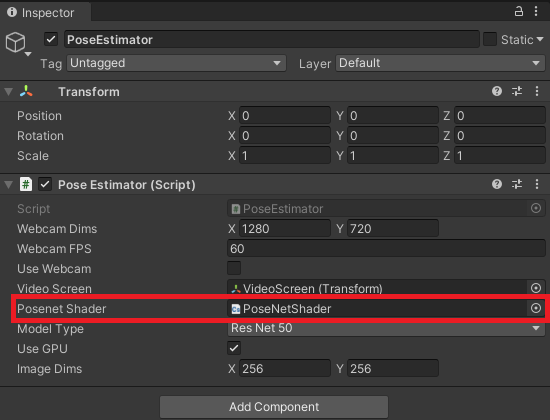
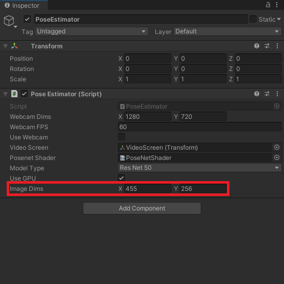
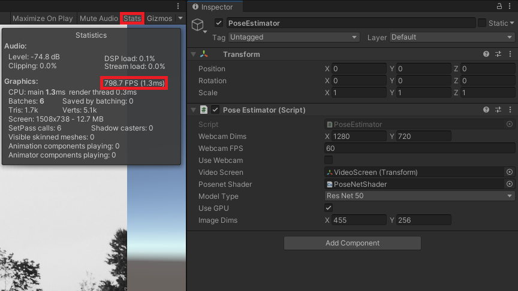
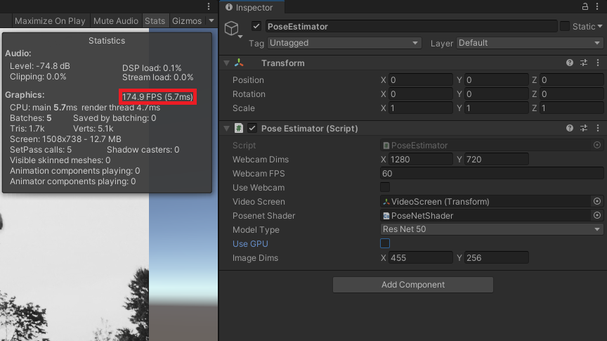

Barracuda PoseNet Tutorial 2nd Edition Pt. 3
- Overview
- Create Compute Shader
- Create Utils Script
- Update
PoseEstimatorScript - Assign
PoseNetShader - Test it Out
- Summary
Overview
The MobileNet and ResNet50 versions of the PoseNet model require different preprocessing steps. While it is more efficient to perform these steps on a GPU with a Compute shader, this may not be supported by the target platform. Therefore, we will also cover how to perform the preprocessing steps on the CPU as well.
Note: We will be manually toggling between using the CPU and GPU in this tutorial. For real-world applications, we can determine if the target system supports compute shaders with the SystemInfo.supportsComputeShaders property.
Create Compute Shader
We will start by implementing the preprocessing steps in a compute shader to execute them on a GPU. In the Assets section, create a new folder called Shaders. Enter the Shaders folder and right-click an empty space. Open the Create submenu and select Shader. Inside the Shader submenu, select Compute Shader. We can name the new shader PoseNetShader.

Double-click the new shader to open it in the code editor. By default, Compute shaders contain the following code. Go ahead and delete all the default code.
// Each #kernel tells which function to compile; you can have many kernels
#pragma kernel CSMain
// Create a RenderTexture with enableRandomWrite flag and set it
// with cs.SetTexture
RWTexture2D<float4> Result;
[numthreads(8,8,1)]
void CSMain (uint3 id : SV_DispatchThreadID)
{
// TODO: insert actual code here!
Result[id.xy] = float4(id.x & id.y, (id.x & 15)/15.0, (id.y & 15)/15.0, 0.0);
}Specify Function Names
We will first add the #pragma kernel lines to indicate what functions we want to be compiled. Without them, we can not access these functions from the PoseEstimator script. We’ll call the two functions PreprocessMobileNet and PreprocessResNet respectively.
// Each #kernel tells which function to compile; you can have many kernels
#pragma kernel PreprocessMobileNet
#pragma kernel PreprocessResNetDefine Variables
We will need a Texture2D variable to store the pixel data for the input image that will be passed from the PoseEstimator script. We will give it a data type of half4, which is a medium precision 4D vector. Each 4D Vector will contain the RGBA color and alpha values for a single pixel.
We also need a RWTexture2D so that we can write the processed image data back to a RenderTexture in the PoseEstimator script. Give it a data type of half4 as well.
// The pixel data for the input image
Texture2D<half4> InputImage;
// The pixel data for the processed image
RWTexture2D<half4> Result;Create PreprocessMobileNet Function
Now we can define the functions we named earlier. We will stick with the default values for numthreads of (8,8,1).
The MobileNet version of the model expects color values to be in the range [-1,1]. By default color values in Unity are in the range [0,1]. The alpha channel is not used by the model, so the value does not matter.
[numthreads(8, 8, 1)]
void PreprocessMobileNet(uint3 id : SV_DispatchThreadID)
{
// Normalize the color values to the range [-1,1]
//2 * (value - min) / (max - min) - 1
Result[id.xy] = half4(
2.0h * InputImage[id.xy].r / 1.0h - 1.0h,
2.0h * InputImage[id.xy].g / 1.0h - 1.0h,
2.0h * InputImage[id.xy].b / 1.0h - 1.0h,
InputImage[id.xy].a);
}Create PreprocessResNet Function
The ResNet50 version of the model expects color values to be in the range [0,255]. We also need to subtract the mean RGB color values for the ImageNet dataset to the pixel values.
[numthreads(8, 8, 1)]
void PreprocessResNet(uint3 id : SV_DispatchThreadID)
{
// Scale each color value to the range [0,255]
// and add the ImageNet mean value
Result[id.xy] = half4(
InputImage[id.xy].r * 255.0h - 123.15h,
InputImage[id.xy].g * 255.0h - 115.90h,
InputImage[id.xy].b * 255.0h - 103.06h,
InputImage[id.xy].a);
}Final Code
// Each #kernel tells which function to compile; you can have many kernels
#pragma kernel PreprocessResNet
#pragma kernel PreprocessMobileNet
// The pixel data for the input image
Texture2D<half4> InputImage;
// The pixel data for the processed image
RWTexture2D<half4> Result;
[numthreads(8, 8, 1)]
void PreprocessMobileNet(uint3 id : SV_DispatchThreadID)
{
// Normalize the color values to the range [-1,1]
//2 * (value - min) / (max - min) - 1
Result[id.xy] = half4(
2.0h * InputImage[id.xy].r / 1.0h - 1.0h,
2.0h * InputImage[id.xy].g / 1.0h - 1.0h,
2.0h * InputImage[id.xy].b / 1.0h - 1.0h,
InputImage[id.xy].a);
}
[numthreads(8, 8, 1)]
void PreprocessResNet(uint3 id : SV_DispatchThreadID)
{
// Scale each color value to the range [0,255]
// and add the ImageNet mean value
Result[id.xy] = half4(
InputImage[id.xy].r * 255.0h - 123.15h,
InputImage[id.xy].g * 255.0h - 115.90h,
InputImage[id.xy].b * 255.0h - 103.06h,
InputImage[id.xy].a);
}Create Utils Script
We will be placing the CPU preprocessing and postprocessing methods inside a separate C# script called Utils, to prevent the PoseEstimator script from getting too long.
Remove MonoBehaviour Inheritance
The Utils class does not need to inherit from Monobehavior as it will not be directly attached to a GameObject.
public class UtilsCreatePreprocessMobileNet Method
The Barracuda library uses Tensors to store data. These are like multidimensional arrays. We can download the data stored in a Tensor to a regular float array. We will pass this array as input to the preprocessing methods and then upload the new values to a Tensor.
Note: Make sure to use the exact names for the methods as those in the Compute shader.
/// <summary>
/// Applies the preprocessing steps for the MobileNet model on the CPU
/// </summary>
/// <param name="tensor">Pixel data from the input tensor</param>
public static void PreprocessMobileNet(float[] tensor)
{
// Normaliz the values to the range [-1, 1]
System.Threading.Tasks.Parallel.For(0, tensor.Length, (int i) =>
{
tensor[i] = (float)(2.0f * tensor[i] / 1.0f) - 1.0f;
});
}Create PreprocessResNet Method
The color data for pixels is stored sequentially in the tensor array. For example, the first three values in the array would be the red, green, and blue color values for the first pixel in the image. The tensor data will not have an alpha channel, so we do not need to account for it here.
///// <summary>
///// Applies the preprocessing steps for the ResNet50 model on the CPU
///// </summary>
///// <param name="tensor">Pixel data from the input tensor</param>
public static void PreprocessResNet(float[] tensor)
{
System.Threading.Tasks.Parallel.For(0, tensor.Length / 3, (int i) =>
{
tensor[i * 3 + 0] = (float)tensor[i * 3 + 0] * 255f - 123.15f;
tensor[i * 3 + 1] = (float)tensor[i * 3 + 1] * 255f - 115.90f;
tensor[i * 3 + 2] = (float)tensor[i * 3 + 2] * 255f - 103.06f;
});
}Update PoseEstimator Script
Now we can call the preprocessing methods inside the PoseEstimator script. However, we first need to make some other additions.
Add Barracuda Namespace
We need to add the Unity.Barracuda namespace so that we can work with Tensors.
using System.Collections;
using System.Collections.Generic;
using UnityEngine;
using UnityEngine.Video;
using Unity.Barracuda;Add Public Variables
We can define a public enum for the two different model versions. We can use this to create a dropdown menu in the inspector tab to switch between the two options. We will name it ModelType.
public class PoseEstimator : MonoBehaviour
{
public enum ModelType
{
MobileNet,
ResNet50
}Next, we will need a public ComputeShader variable so that we can access the PoseNetShader.
We can create a dropdown for selecting the model type by defining a public ModelType variable. We will set the default value to ModelType.ResNet50.
We also need a public bool variable to toggle between using the CPU and GPU for processing input.
Lastly, we need a public VectorInt variable to specify the dimensions of the input image. Using the original resolution of the video feed could significantly impact performance, so we will downscale the input image before feeding it to the model.
[Tooltip("The ComputeShader that will perform the model-specific preprocessing")]
public ComputeShader posenetShader;
[Tooltip("The model architecture used")]
public ModelType modelType = ModelType.ResNet50;
[Tooltip("Use GPU for preprocessing")]
public bool useGPU = true;
[Tooltip("The dimensions of the image being fed to the model")]
public Vector2Int imageDims = new Vector2Int(256, 256);Add Private Variables
We will be maintaining the aspect ratio of the source video feed when downscaling the input image. We need to keep track of the current input dimensions so that we know when to calculate the new dimensions. Create a new private Vector2Int variable called targetDims.
Next, create a private float variable called aspectRatioScale. This will store the scaling value to update the targetDims.
The pixel data for the input image will be stored in a new private RenderTexture variable called rTex.
We will be encapsulating the appropriate preprocessing method using the Action<T> delegate.
The last new variable we need is a Barracuda Tensor to store the input data for the model.
// Target dimensions for model input
private Vector2Int targetDims;
// Used to scale the input image dimensions while maintaining aspect ratio
private float aspectRatioScale;
// The texture used to create input tensor
private RenderTexture rTex;
// The preprocessing function for the current model type
private System.Action<float[]> preProcessFunction;
// Stores the input data for the model
private Tensor input;Update Start Method
At the bottom of the Start method, we need to adjust the input dimensions to maintain the source aspect ratio. We will use the height value to update the width for the input dimensions. We can then initialize rTex with the new input dimensions.
// Adjust the input dimensions to maintain the source aspect ratio
aspectRatioScale = (float)videoTexture.width / videoTexture.height;
targetDims.x = (int)(imageDims.y * aspectRatioScale);
imageDims.x = targetDims.x;
// Initialize the RenderTexture that will store the processed input image
rTex = RenderTexture.GetTemporary(imageDims.x, imageDims.y, 24, RenderTextureFormat.ARGBHalf);Final Code
// Start is called before the first frame update
void Start()
{
if (useWebcam)
{
// Limit application framerate to the target webcam framerate
Application.targetFrameRate = webcamFPS;
// Create a new WebCamTexture
webcamTexture = new WebCamTexture(webcamDims.x, webcamDims.y, webcamFPS);
// Start the Camera
webcamTexture.Play();
// Deactivate the Video Player
videoScreen.GetComponent<VideoPlayer>().enabled = false;
// Update the videoDims.y
videoDims.y = webcamTexture.height;
// Update the videoDims.x
videoDims.x = webcamTexture.width;
}
else
{
// Update the videoDims.y
videoDims.y = (int)videoScreen.GetComponent<VideoPlayer>().height;
// Update the videoDims.x
videoDims.x = (int)videoScreen.GetComponent<VideoPlayer>().width;
}
// Create a new videoTexture using the current video dimensions
videoTexture = RenderTexture.GetTemporary(videoDims.x, videoDims.y, 24, RenderTextureFormat.ARGBHalf);
// Initialize the videoScreen
InitializeVideoScreen(videoDims.x, videoDims.y, useWebcam);
// Adjust the camera based on the source video dimensions
InitializeCamera();
// Adjust the input dimensions to maintain the source aspect ratio
aspectRatioScale = (float)videoTexture.width / videoTexture.height;
targetDims.x = (int)(imageDims.y * aspectRatioScale);
imageDims.x = targetDims.x;
// Initialize the RenderTexture that will store the processed input image
rTex = RenderTexture.GetTemporary(imageDims.x, imageDims.y, 24, RenderTextureFormat.ARGBHalf);
}Create ProcessImageGPU Method
Next, we’ll make a new method to execute the functions in our ComputeShader. This method will take in the image that needs to be processed as well as a function name to indicate which function we want to execute. As mentioned previously, we need to store the processed images in textures with HDR formats to use color values outside the default range of [0,1].
Method Steps
- Get the
ComputeShaderindex for the specified function - Create a temporary
RenderTexturewith random write access enabled to store the processed image - Execute the
ComputeShader - Copy the processed image back into the original
RenderTexture - Release the temporary
RenderTexture
Code
/// <summary>
/// Process the provided image using the specified function on the GPU
/// </summary>
/// <param name="image"></param>
/// <param name="functionName"></param>
/// <returns></returns>
private void ProcessImageGPU(RenderTexture image, string functionName)
{
// Specify the number of threads on the GPU
int numthreads = 8;
// Get the index for the specified function in the ComputeShader
int kernelHandle = posenetShader.FindKernel(functionName);
// Define a temporary HDR RenderTexture
RenderTexture result = RenderTexture.GetTemporary(image.width, image.height, 24, RenderTextureFormat.ARGBHalf);
// Enable random write access
result.enableRandomWrite = true;
// Create the HDR RenderTexture
result.Create();
// Set the value for the Result variable in the ComputeShader
posenetShader.SetTexture(kernelHandle, "Result", result);
// Set the value for the InputImage variable in the ComputeShader
posenetShader.SetTexture(kernelHandle, "InputImage", image);
// Execute the ComputeShader
posenetShader.Dispatch(kernelHandle, result.width / numthreads, result.height / numthreads, 1);
// Copy the result into the source RenderTexture
Graphics.Blit(result, image);
// Release the temporary RenderTexture
RenderTexture.ReleaseTemporary(result);
}Create ProcessImage Method
We will call the preprocessing functions inside a new method called ProcessImage. The method will take in a RenderTexture and update the input Tensor data.
Method Steps
- Check whether to use the GPU
- If using GPU
- Call
ProcessImageGPU()method using the name of thepreProcessFunction - Initialize
inputwith pixel data fromrTex
- Call
- If using CPU
- Initialize
inputwith pixel data fromrTex - Download Tensor data to
floatarray - Call the appropriate preprocessing function for the current model type
- Update
inputwith the new color values
- Initialize
- If using GPU
Code
/// <summary>
/// Calls the appropriate preprocessing function to prepare
/// the input for the selected model and hardware
/// </summary>
/// <param name="image"></param>
private void ProcessImage(RenderTexture image)
{
if (useGPU)
{
// Apply preprocessing steps
ProcessImageGPU(image, preProcessFunction.Method.Name);
// Create a Tensor of shape [1, image.height, image.width, 3]
input = new Tensor(image, channels: 3);
}
else
{
// Create a Tensor of shape [1, image.height, image.width, 3]
input = new Tensor(image, channels: 3);
// Download the tensor data to an array
float[] tensor_array = input.data.Download(input.shape);
// Apply preprocessing steps
preProcessFunction(tensor_array);
// Update input tensor with new color data
input = new Tensor(input.shape.batch,
input.shape.height,
input.shape.width,
input.shape.channels,
tensor_array);
}
}Modify Update Method
We will update the input dimensions and process the input inside the Update method.
Clamp Input Dimensions
The model will not return useable output with input below 130px in size. There just isn’t enough for information for the model to work with at that low of a resolution. Also, the model downscales the input internally by a set amount and might error out if the input is too low. To prevent this, we will ensure the input dimensions are at least 130x130.
// Prevent the input dimensions from going too low for the model
imageDims.x = Mathf.Max(imageDims.x, 130);
imageDims.y = Mathf.Max(imageDims.y, 130);Calculate Input Dimensions
We need to adjust the input dimensions to maintain the source aspect ratio whenever they are updated by the user. We will check if the values for inputDims have changed by comparing them to targetDims.
// Update the input dimensions while maintaining the source aspect ratio
if (imageDims.x != targetDims.x)
{
aspectRatioScale = (float)videoTexture.height / videoTexture.width;
targetDims.y = (int)(imageDims.x * aspectRatioScale);
imageDims.y = targetDims.y;
targetDims.x = imageDims.x;
}
if (imageDims.y != targetDims.y)
{
aspectRatioScale = (float)videoTexture.width / videoTexture.height;
targetDims.x = (int)(imageDims.y * aspectRatioScale);
imageDims.x = targetDims.x;
targetDims.y = imageDims.y;
}Update rTex Dimensions
We will also need to update rTex with the new input dimensions and copy the pixel data from the source videoTexture to it.
// Update the rTex dimensions to the new input dimensions
if (imageDims.x != rTex.width || imageDims.y != rTex.height)
{
RenderTexture.ReleaseTemporary(rTex);
// Assign a temporary RenderTexture with the new dimensions
rTex = RenderTexture.GetTemporary(imageDims.x, imageDims.y, 24, rTex.format);
}
// Copy the src RenderTexture to the new rTex RenderTexture
Graphics.Blit(videoTexture, rTex);Call ProcessImage Method
The preProcessFunction variable will be upated in a new function that will be covered in the next post. For now, we can add a temporary if/else statement to test the preprocessing functions. We will delete this statement in the next part of the tutorial.
if (modelType == ModelType.MobileNet)
{
preProcessFunction = Utils.PreprocessMobileNet;
}
else
{
preProcessFunction = Utils.PreprocessResNet;
}Finally, we can call the ProcessImage method and pass rTex as input.
// Prepare the input image to be fed to the selected model
ProcessImage(rTex);Final Code
// Update is called once per frame
void Update()
{
// Copy webcamTexture to videoTexture if using webcam
if (useWebcam) Graphics.Blit(webcamTexture, videoTexture);
// Prevent the input dimensions from going too low for the model
imageDims.x = Mathf.Max(imageDims.x, 64);
imageDims.y = Mathf.Max(imageDims.y, 64);
// Update the input dimensions while maintaining the source aspect ratio
if (imageDims.x != targetDims.x)
{
aspectRatioScale = (float)videoTexture.height / videoTexture.width;
targetDims.y = (int)(imageDims.x * aspectRatioScale);
imageDims.y = targetDims.y;
targetDims.x = imageDims.x;
}
if (imageDims.y != targetDims.y)
{
aspectRatioScale = (float)videoTexture.width / videoTexture.height;
targetDims.x = (int)(imageDims.y * aspectRatioScale);
imageDims.x = targetDims.x;
targetDims.y = imageDims.y;
}
// Update the rTex dimensions to the new input dimensions
if (imageDims.x != rTex.width || imageDims.y != rTex.height)
{
RenderTexture.ReleaseTemporary(rTex);
// Assign a temporary RenderTexture with the new dimensions
rTex = RenderTexture.GetTemporary(imageDims.x, imageDims.y, 24, rTex.format);
}
// Copy the src RenderTexture to the new rTex RenderTexture
Graphics.Blit(videoTexture, rTex);
if (modelType == ModelType.MobileNet)
{
preProcessFunction = Utils.PreprocessMobileNet;
}
else
{
preProcessFunction = Utils.PreprocessResNet;
}
// Prepare the input image to be fed to the selected model
ProcessImage(rTex);
}Assign PoseNetShader
The last step we need to take before pressing play is to assign the PoseNetShader asset. Select the PoseEstimator object in the Hierarchy tab. Then, drag and drop the PoseNetShader asset from the Assets section onto its spot in the Inspector tab.

Test it Out
Now when we press play, we can see that the values for Image Dims get updated in the Inspector tab to maintain the source aspect ratio. We can change either the X or Y values and the other dimension will be automatically adjusted.

We can view the frame rate by pressing the stats button in the Game View. If we toggle Use GPU in the Inspector tab, we can see why it is preferrable to perform the preprocessing steps on the GPU. The frame rate drops significantly when using the CPU.
GPU

CPU

Summary
Now that we have prepared the input, we are ready to feed it to the model. In the next post, we will cover how to initialize, modify, and execute the PoseNet models.
Previous: Part 2
Next: Part 4
Project Resources: GitHub Repository